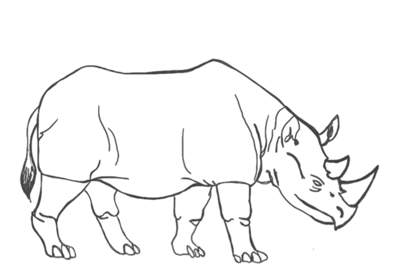
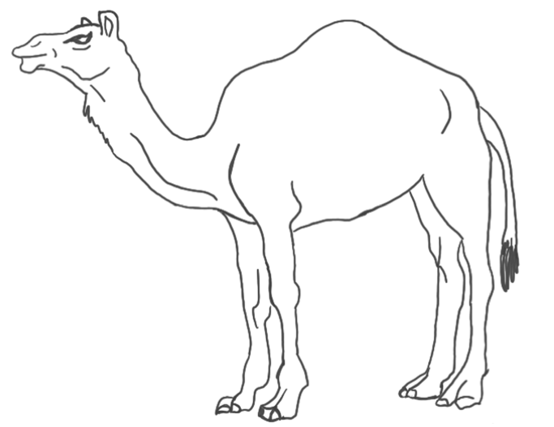

search_check Resultados da Pesquisa
star Acesso Rápido
Escalas Disponíveis
Calculadoras de Risco
Escore HAS-BLED
Estratificação de risco de sangramento maior em pacientes com Fibrilação Atrial em uso de anticoagulação.
PPSv2 (Cuidados Paliativos)
Palliative Performance Scale - Avaliação do Desempenho do Paciente.
Instruções para o uso da PPS (ver também definição dos termos)
- A pontuação na escala PPS é determinada pela leitura horizontal de cada nível de forma a encontrar aquele que melhor se adequa ao paciente; esta corresponderá a uma porcentagem.
- Deve-se começar pela coluna da esquerda e ler na vertical até encontrar o nível de deambulação adequado ao paciente. Posteriormente, deve-se ler a coluna seguinte e, de cima para baixo, verificar qual o nível de atividade e doença apropriado ao caso. Estes passos devem ser repetidos ao longo das cinco colunas, antes de atribuir uma pontuação ao paciente. Vale ressaltar que as colunas da esquerda são determinantes mais fortes e assumem maior importância em relação às outras.
Exemplo 1: Um paciente que está sentado ou deitado a maior parte do dia, devido à fadiga relacionada à doença avançada, e necessita de apoio considerável na marcha, mesmo para pequenas distâncias, embora possa estar totalmente consciente e com bom aporte alimentar, terá uma pontuação PPS de 50%.
Exemplo 2: Um paciente que tenha ficado tetraplégico, estando totalmente dependente de terceiros, teria um nível PPS de 30%. Embora possa estar em uma cadeira de rodas (e assim pareça um nível PPS de 50%), a pontuação é de 30% porque estaria acamado (devido à doença ou a complicações) se não tivesse cuidadores que o ajudassem a levantar ou transferir. O paciente pode ter aporte alimentar e estado cognitivo normais.
Exemplo 3: No entanto, se o paciente do exemplo 2 estivesse paraplégico e acamado, mas capaz de algum autocuidado, como alimentar-se sozinho, a pontuação PPS seria maior (40% ou 50%), dado que não necessita de apoio total. - As pontuações PPS aumentam sempre em intervalos de 10%. Por vezes, haverá parâmetros facilmente identificados em um determinado nível, mas um ou dois que se adequem a um nível superior ou inferior. Nestes casos, deve-se decidir pelo nível que melhor se adequa ao paciente em questão, no seu todo. Escolher um nível intermediário (exemplo: PPS 45%) não é correto. A conjugação do juízo clínico com a maior importância e relevância das colunas à esquerda é usada para decidir qual a pontuação mais adequada.
- A PPS pode ser bastante útil. Em primeiro lugar, é uma excelente ferramenta de comunicação para descrever rapidamente o atual estado funcional de um paciente. Em segundo lugar, pode ser importante para avaliar a capacidade de trabalho ou outros parâmetros, e comparar posteriormente. Por fim, parece ter um valor prognóstico.
Definição dos termos da PPS
Como referido abaixo, alguns termos têm significados semelhantes. As diferenças são prontamente identificáveis à medida que se lê horizontalmente, em cada linha, até encontrar o perfil que melhor se adequa ao paciente ao longo das cinco colunas.
- 1. Deambulação: Os termos "majoritariamente sentado ou deitado", "majoritariamente deitado" e "acamado" são claramente semelhantes. As pequenas diferenças relacionam-se com os parâmetros da coluna referente ao autocuidado. Por exemplo, "acamado" no nível PPS de 30% relaciona-se com a fadiga profunda e paralisia que impedem o paciente de realizar o autocuidado. A diferença entre "majoritariamente sentado ou deitado" e "majoritariamente deitado" está na proporção de tempo que o paciente é capaz de permanecer sentado em relação à necessidade de se deitar. A "deambulação diminuída" pode corresponder a uma pontuação PPS de 70% ou 60%. Ao usar a coluna adjacente, a diminuição da deambulação pode relacionar-se com a incapacidade de realizar normalmente sua atividade laboral, alguns hobbies ou tarefas domésticas. O paciente continua capaz de andar e deslocar-se sozinho, mas com um nível PPS de 60% necessita de apoio pontual.
- 2. Nível de atividade e evidência de doença: Os termos "alguma evidência de doença", "doença significativa" e "doença extensa" referem-se a aspectos físicos e clínicos que mostram os graus de progressão da doença. A extensão da doença também é avaliada de acordo com a capacidade de manter a atividade laboral ou outras tarefas.
- 3. Autocuidado: A necessidade de "apoio pontual" significa que, na maior parte do tempo, o paciente é capaz de se levantar da cama, caminhar, lavar-se, ir ao banheiro e alimentar-se pelos seus próprios meios, mas ocasionalmente necessita de assistência mínima. Precisar de "apoio considerável" implica que o paciente necessite de ajuda várias vezes por dia. O "apoio quase completo" é considerado uma extensão do "apoio considerável". Estar "totalmente dependente" significa que o paciente é totalmente incapaz de se alimentar, ir ao banheiro ou realizar o autocuidado sem ajuda.
- 4. Capacidade de ingestão alimentar: A "ingestão alimentar normal" refere-se aos hábitos alimentares da pessoa antes de adoecer. A "ingestão alimentar reduzida" remete a qualquer diminuição em relação ao padrão normal. A "ingestão alimentar mínima" aplica-se a quantidades muito pequenas de alimentos, geralmente em purê ou líquidos, que não alcançam as necessidades nutricionais.
- 5. Nível de consciência: O "nível de consciência total" implica a ausência de alteração do estado de alerta e orientação. "Confusão" denota a presença de delirium ou demência e representa um nível diminuído de consciência. O termo "sonolência" inclui fadiga, efeitos colaterais de medicamentos, delirium ou proximidade da morte. Neste contexto, "coma" é a ausência de resposta a estímulos verbais ou físicos.
Escala de Glasgow
Avaliação do nível de consciência, resposta pupilar (GCS-P) e adaptação pediátrica.
Ribeiro-Fiuza (gestão da visita domiciliar à idosos)
Escala para avaliação e gestão de visitas domiciliares na APS (Ribeiro, Fiuza e Pinheiro).
Escore CHA₂DS₂-VA
Estratificação de risco tromboembólico em pacientes com Fibrilação Atrial (ESC 2024 / SBC 2025).
Escore de Wells (TVP)
Estratificação de risco para Trombose Venosa Profunda (Modelo Simplificado de 2 Níveis).
Escore de Wells (TEP)
Estratificação de risco para Tromboembolismo Pulmonar (Modelo Simplificado de 2 Níveis).
Cronômetro Clínico
Aferição de sinais vitais, Teste TUG e Temporizador para testes rápidos.
Toque no botão a cada pulso ou incursão respiratória. O sistema calcula a frequência por minuto automaticamente.
Freq. Respiratória (FR)
Lactente (até 1 ano): 24 - 40 irpm
Pré-escolar (1 a 5 anos): 22 - 34 irpm
Escolar (6 a 12 anos): 18 - 30 irpm
Adolescente/Adulto: 12 - 20 irpm
Freq. Cardíaca (BPM)
Lactente (até 1 ano): 90 - 150 bpm
Pré-escolar (1 a 5 anos): 80 - 140 bpm
Escolar (6 a 12 anos): 70 - 120 bpm
Adolescente/Adulto: 60 - 100 bpm
Teste TUG (Timed Up and Go)
11 a 20 segundos: Independência básica, mas risco moderado.
> 20 segundos: Risco alto de quedas. Necessita investigação.
Escala CuidaSM
Escala de Avaliação da Necessidade de Cuidado em Saúde Mental.
IVCF-20
Índice de Vulnerabilidade Clínico Funcional para Idosos (≥ 60 anos).
Índice de Katz
NIH Stroke Scale (NIHSS)
Escala de Avaliação de AVC do National Institutes of Health.
| 0 | Sem sintomas de AVC |
| 1 a 4 | AVC Leve |
| 5 a 15 | AVC Moderado |
| 16 a 20 | AVC Moderado a Grave |
| 21 a 42 | AVC Grave |
Referência: Brott T, Adams HP Jr, Olinger CP, et al. Measurements of acute cerebral infarction: a clinical examination scale. Stroke. 1989;20(7):864-870.
Tradução e adaptação: Octávio Marques Pontes-Neto. Neurologia - HCFMRP - USP.
Edmonton Frail Scale (EFS)
Escala de Risco Familiar
Estratificação de Risco Familiar de Coelho-Savassi. Selecione a quantidade de indivíduos em cada categoria.
Escore TWIST
Avaliação clínica para predição de Torção Testicular em pacientes com escroto agudo.
FINDRISC
Avaliação de Risco de Diabetes Tipo 2 em 10 anos.
Escala de Dispneia mMRC
Selecione a opção que melhor descreve sua falta de ar:
CAT - COPD Assessment Test
Avalie cada item de 0 a 5.
ACT - Controle da Asma (4 semanas)
Calculadora Gestacional e Obstétrica
Parte I: Aspectos Não Motores das EVD
Parte II: Aspectos Motores das EVD
Parte III: Avaliação Motora Objetiva
Parte IV: Complicações Motoras
Fagerström (Nicotina)
STOP-BANG
Epworth (Sonolência)
0 = Nenhuma | 1 = Pequena | 2 = Moderada | 3 = Grande chance de cochilar
Exposição Ambiental (HUSM)
Marque SIM para exposições presentes e adicione observações se necessário.
Mini-Mental (MEEM)
Rastreio de declínio cognitivo com roteiro estruturado de aplicação.
MONTREAL COGNITIVE ASSESSMENT (MoCA)
Versão Experimental Brasileira
VISUOESPACIAL / EXECUTIVA
Selecione na ordem exata: 1 A 2 B 3 C 4 D 5 E. O primeiro erro anula a pontuação.
Peça ao paciente que desenhe o relógio em uma folha de papel e depois avalie o desenho. Selecione o que estiver correto:
NOMEAÇÃO


MEMÓRIA (Sem Pontuação)
Leia a lista de palavras. O sujeito deve repeti-la. Faça duas tentativas. Evocar após 5 minutos.
Rosto | Veludo | Igreja | Margarida | Vermelho
ATENÇÃO
O sujeito deve bater com a mão (na mesa) cada vez que ouvir a letra "A". Não se atribuem pontos se ≥ 2 erros.
F B A C M N A A J K L B A F A K D E A A A J A M O F A A B
93 - 86 - 79 - 72 - 65
LINGUAGEM
Dizer o maior número possível de palavras que comecem pela letra F (1 minuto).
ABSTRAÇÃO
EVOCAÇÃO TARDIA
ORIENTAÇÃO
Calculadora de Carga Tabágica
Preencha o período geral para autocompletar ou ajuste cada item individualmente.
⏱️ Período Geral
🚬 Cigarro Comum
Padrão🍂 Palheiro / Palha
1 Palheiro ≈ 3 Cigarros⚡ Vape / Pod
1 Pod (5%) ≈ 20 Cigarros💨 Narguilé
1 Sessão ≈ 100 CigarrosTaxa de Filtração Glomerular (CKD-EPI)
Equação CKD-EPI 2021 (Sem ajuste para raça), recomendada pelo KDIGO para estimativa da TFG.
Ref: Inker LA, et al. New creatinine- and cystatin C–based equations to estimate GFR without race. N Engl J Med. 2021.
Taxa de Filtração Glomerular Pediátrica
Fórmula Bedside Schwartz (IDMS-rastreável) para estimativa da TFG em pacientes de 1 a 18 anos.
IMC Simples
Cálculo do Índice de Massa Corporal e classificação padrão.
Escore de Alvarado Modificado
Avaliação clínica de probabilidade de apendicite aguda para guiar conduta e exames de imagem.
Escore de Risco Global (ERG - SBC)
Estimativa de risco de eventos cardiovasculares maiores em 10 anos (Diretriz Brasileira de Dislipidemia, 2017).
Ref: Atualização da Diretriz Brasileira de Dislipidemia e Prevenção da Aterosclerose (SBC, 2017).
Fluxogramas e Algoritmos
DPOC (GOLD 2026)
Suporte à Decisão Clínica e Estratificação de Risco.
Insira os valores da Espirometria (Pós-Broncodilatador).
Qual a porcentagem do VEF1 (FEV1) em relação ao predito?
Selecione a pontuação nas escalas mMRC ou CAT.
Considere exacerbações do ano anterior que necessitaram de antibióticos, corticoides sistêmicos ou hospitalização.
Resultado da Estratificação
- Cessação do Tabagismo: Intervenção prioritária em todos os pacientes.
- Vacinação (GOLD 2026): Influenza (Anual), COVID-19, Pneumocócica (PCV20 ou PCV21), Tdap e Herpes Zoster.
- Atividade Física: Encorajar atividade regular.
- Reabilitação Pulmonar: Fortemente recomendada para este grupo.
Critério não atendido
Uma relação VEF1/CVF ≥ 0.70 pós-broncodilatador não preenche o critério espirométrico para DPOC segundo o GOLD 2026.
Considere diagnósticos diferenciais (Asma, Doença Cardíaca, etc).
Asma (GINA 2025)
Trilhas de Tratamento para Adultos e Adolescentes (≥ 12 anos).
Com que frequência o paciente apresenta sintomas diurnos de asma?
O paciente acorda à noite devido aos sintomas da asma?
Avaliação da Função Pulmonar e Eosinófilos.
O GINA 2025 divide o tratamento em duas trilhas terapêuticas baseadas na medicação de alívio.
IMC Avançado (CDSS)
Sistema de Suporte à Decisão Clínica: Correção para amputados, etnia asiática, geriatria (OPAS) e farmacocinética (BSA/IBW).
Equipe APS Tools
Ricardo Souza Heinzelmann
OrientadorMédico de família e comunidade titulado pela Sociedade Brasileira de Medicina de Família e Comunidade (SBMFC). Possui graduação em Medicina pela Faculdade de Medicina da Universidade Federal da Bahia (UFBA), especialização em saúde da família (UFBA) e mestrado em epidemiologia com ênfase em atenção primária à saúde pela UFRGS. Doutorando em Epidemiologia pela Universidade Federal do Rio Grande do Sul (UFRGS). Diretor de Exercício Profissional da Sociedade Brasileira de Medicina de Família e Comunidade - SBMFC (2024-2026). Professor efetivo do Departamento de Saúde Coletiva da Universidade Federal de Santa Maria (UFSM), coordena o Internato em Atenção Primária à Saúde do Curso de Medicina da UFSM, além de coordenar o Programa de Residência em Medicina de Família e Comunidade da Universidade Federal de Santa Maria (UFSM).
Rogério Turchetti
CoorientadorProfessor Adjunto de Tecnologia em Redes de Computadores da Universidade Federal de Santa Maria (UFSM). Possui mestrado em Engenharia de Produção com ênfase em sistemas de informação pela Universidade Federal de Santa Maria (UFSM) e doutorado em Informática pela Universidade Federal do Paraná (UFPR).
Desenvolvedores

Eduardo Felipe Alchieri
eduardo.alchieri@acad.ufsm.brAcadêmico do nono semestre do curso de Medicina da Universidade Federal de Santa Maria (UFSM). Atua como aluno de iniciação científica no Laboratório de Bioquímica do Exercício (BioEx) e no Laboratório de Neurologia Clínica e Experimental (Lanec), desenvolvendo atividades de pesquisa com ênfase em neurociências e fisiologia do exercício.
Tiago Ramalho de Oliveira
tiago.ramalho@acad.ufsm.brAcadêmico do nono semestre do curso de Medicina da Universidade Federal de Santa Maria (UFSM). Atua como bolsista do Programa de Educação pelo Trabalho para a Saúde: Informação e Saúde Digital (PET Saúde/I&SD), desenvolvendo atividades de integração ensino-serviço-comunidade com ênfase no uso de tecnologias de informação, telessaúde e ferramentas de transformação digital aplicadas à gestão e assistência no Sistema Único de Saúde (SUS).
Aline Baggio Pereira
alinebpereira@hcpa.edu.brAcadêmica do oitavo semestre do curso de Medicina da Universidade Federal do Rio Grande do Sul (UFRGS). Atua como monitora da disciplina de Parasitologia e desenvolve atividades de iniciação científica no projeto "Avaliação prognóstica de pacientes com câncer de mama inicial HER2-low submetidas a tratamento neoadjuvante: uma coorte retrospectiva".
Manejo Clínico da Dengue
Estadiamento e Fluxograma de Tratamento (Ministério da Saúde).
Relato de febre, usualmente entre dois e sete dias de duração, e duas ou mais das seguintes manifestações: náusea, vômitos; exantema; mialgia, artralgia; cefaleia, dor retro-orbital; petéquias; prova do laço positiva e leucopenia.
Também pode ser considerado caso suspeito toda criança com quadro febril agudo, usualmente entre dois e sete dias de duração, e sem foco de infecção aparente.
O paciente apresenta algum dos critérios de DENGUE GRAVE abaixo?
- Extravasamento grave de plasma, levando ao choque evidenciado por taquicardia; extremidades distais frias; pulso fraco e filiforme; enchimento capilar lento (>2 segundos); pressão arterial convergente (<20 mmHg), taquipneia; oligúria (<1,5 mL/kg/h); hipotensão arterial (fase tardia do choque); cianose (fase tardia do choque); acumulação de líquidos com insuficiência respiratória.
- Sangramento grave.
- Comprometimento grave de órgãos.
O paciente não possui sinais de gravidade, mas apresenta algum destes sinais de alarme?
- Dor abdominal intensa (referida ou à palpação) e contínua.
- Vômitos persistentes.
- Acúmulo de líquidos (ascite, derrame pleural, derrame pericárdico).
- Hipotensão postural e/ou lipotimia.
- Hepatomegalia maior do que 2 cm abaixo do rebordo costal.
- Sangramento de mucosa.
- Letargia e/ou irritabilidade.
- Aumento progressivo do hematócrito.
O paciente apresenta DENGUE SEM SINAIS DE ALARME. Verifique se ele possui alguma das características abaixo:
- Sangramento: Sangramento espontâneo de pele ou induzido (Prova do Laço positiva).
- Risco Social: Condição que dificulte retorno à unidade.
- Condição Clínica Especial ou Comorbidade: Lactentes (<24 meses), gestantes, adultos >65 anos, hipertensão arterial ou outras doenças cardiovasculares graves, diabetes mellitus, DPOC, asma, obesidade, doenças hematológicas crônicas, doença renal crônica, doença ácido péptica, hepatopatias e doenças autoimunes.